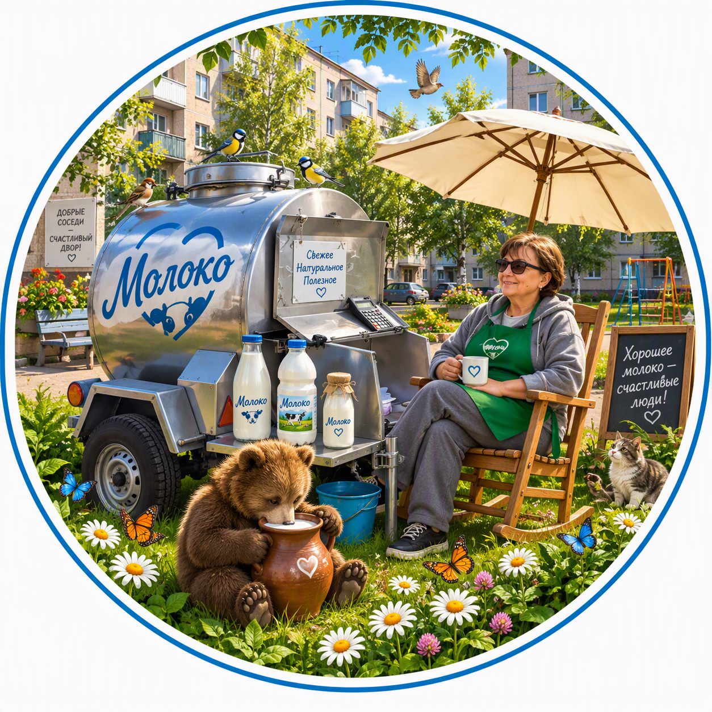
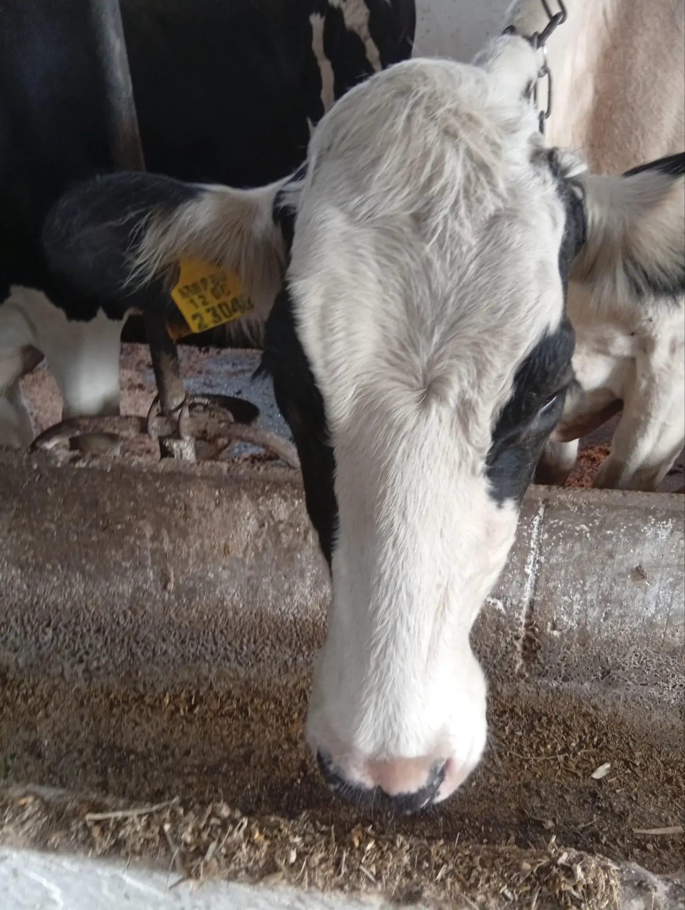
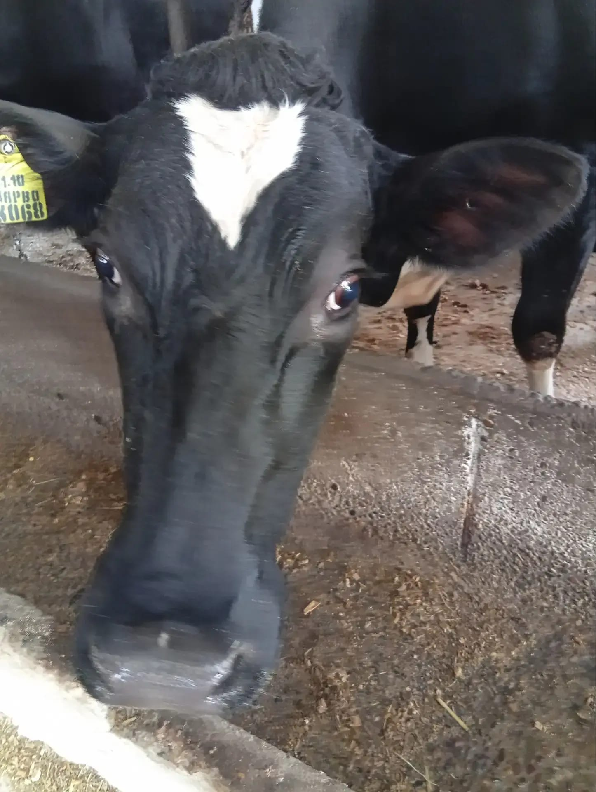

Šviežias pienas Jums
Sveiki!
Mano vardas Viktorija Viktorovna Nikolenko. Kiekvieną dieną stengiuosi, kad Kurganinsko gyventojai galėtų įsigyti šviežio natūralaus pieno tiesiai iš gamintojo.
Parduodame šviežią nenugriebtą vakarinio melžimo pieną, atvėsintą iki +4°C. Tinkamas atšaldymas išsaugo pieno šviežumą, skonį ir naudingąsias savybes.
Mūsų pieną duoda Rusijos juodmargės ir olandų Džersio veislės karvės.
Pieno riebumas yra nuo 3,6% iki 4,7%.
Pienas parduodamas nenugriebtas ir puikiai tinka gaminti:
Net vasaros karštyje pienas išlieka šviežias, kol parvyksite namo.
Mūsų karvės gauna subalansuotą pašarą.
Racioną sudaro:
Toks racionas užtikrina didelį pieno riebumą, puikų skonį ir aukštą kokybę.
Nuo mūsų karvių tiesiai ant Jūsų stalo


Nuskaitykite QR kodą ir parašykite mums žinutę.
Pienas • Privatus pokalbis
Prekyba šalia kiosko „Rospečiat“
Trečiadienis: 07:00 - 12:00
📍 Atidaryti žemėlapyjeŠviežias pienas kiekvieną šeštadienį
Šeštadienis: 06:00 - 10:00
📍 Atidaryti žemėlapyjePienas tiekiamas tiesiai iš Kurganinsko rajono pieno ūkio (MTF).
Daugiau apie ūkį, gyvulių priežiūrą ir pieno gamybą galite sužinoti oficialioje ūkio svetainėje.
🌐 Aplankyti ūkio svetainę